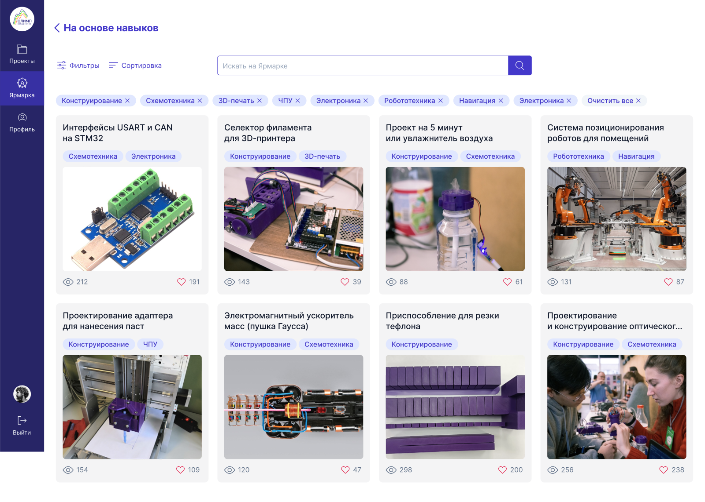

← Все кейсы
Университет ИТМО · Продуктовый дизайн
Платформа ОЛИМП
Платформа лаборатории Университета ИТМО: компетенции участников, поиск проектов и подборки по навыкам.



Портал ОЛИМП
В Университете ИТМО спроектировала веб-портал лаборатории ОЛИМП. Участники рассказывают на нём о своих компетенциях и проектах, а в ярмарке проектов можно найти проект по подборкам, на доске с фильтрами и в подробной карточке.
Продумала информационную архитектуру, навигацию, профиль участника и сценарии поиска проектов